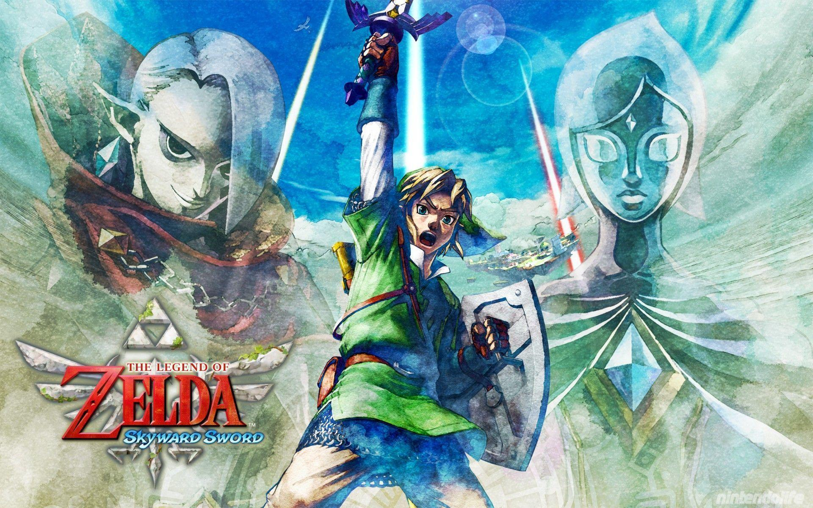

Links Journey
Link must explore 3 different areas of land on his journey of finding Zelda; a forest, volcano, and dessert. While he searches for Zelda he meets a great evil who needs Zelda to release Demise, this evil is called Ghirahim and is constantly putting challenges and enenmies in Links way. Both Link and Ghirahim finally catch up to Zelda and find out a secret ninja has been helping her the whole time. The ninja and zelda go through a giant time travel portal which they blow up as they go through blocking anyone following them. Once Link finds out Zelda is safe, Fi sends him to 3 eteranl flames to create a sword called the master sword so he can destroy the evil of Demise. Before Link can approach the areas to these flames, he must complete trials that have been left by the goddess to make sure no one but the hero reaches them.
 WallPaperCaveOnce Link finally completes these trials and fills his sword with the flames, he is tasked with finding the Triforce which is hidden within Skyloft. The only way to open the path though is by playing the song of the hero which is split up between 4 dragons who are the only ones who know there own seperate part. There is a dragon hidden in all 3 areas on the ground and one in the sky. Link must find all the dragons and complete their tasks to gain there trust that he is the true hero, after he does this he finds out the mystery hidden in skyloft and opens the gates to the triforce which ends up being a maze he has to complete. Once link completes this maze and obtains the triforce, he goes back to the palace where Impa is and there is another portal there where he goes through time and finally sees Zelda again.